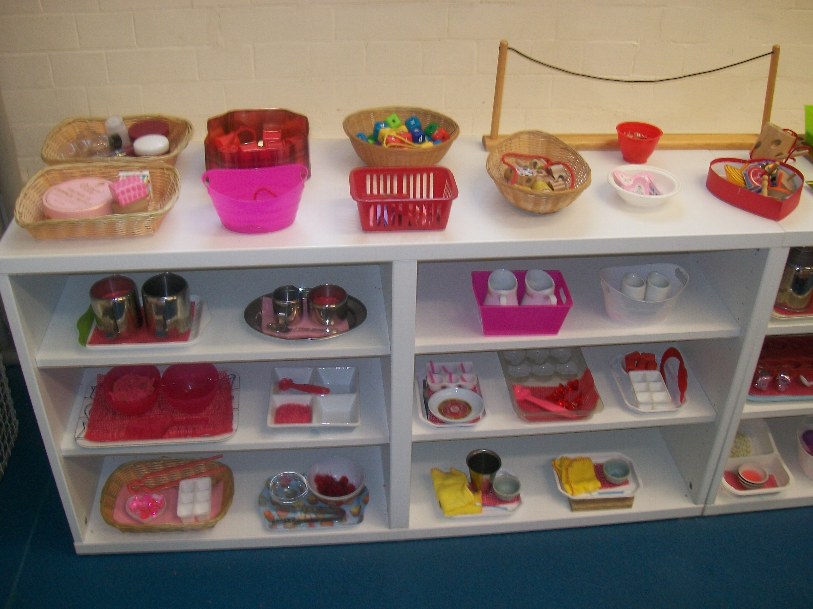

- Home
- About
- Why Montessori?
- Gallery
- News
- Dates & Fees
- Policies
- Contact
Elm Tree MontessoriAbout our Nursery
What is the Monetessori method?
The need for freedom within limits. A carefully prepared environment which guarantees exposure to materials and experiences. The Montessoi method of education is designed to take full advantage of the childrens desire to learn and their unique ability to develop their own capabilities.
Who we are at Elm Tree
You will find that no two Montessori nurseries look exactly the same. At Merrydays & Henley Montessori we respond to the needs of the individual child and to the society and culture they are part of. Our teachers also bring their own special skills and interests into the learning environment.
Here the child’s freedom, dignity and independence is of paramount importance. Our classroom environment is orderly, clean and inviting, with all activities displayed within reach of the children. Some children work in small groups, with a teacher, but the majority work alone following their own
interests. Our Montessori classroom provides learning opportunities for mixed age groups of children, from the age of two to the age of 5. This vertical grouping is essential as it promotes socialisation. The Montessori approach to education shares the underlying principles of the Early Years Foundation Stage.
Maria Montessori believed that three hours of self-directed activity was necessary, she described this as the child’s work cycle. As an accredited Montessori nursery we allow the children to have the freedom to develop their own work cycles. The general atmosphere is of children busy with activities that absorb and interest them.
There are clearly defined learning areas: materials for everyday living, sensorial, mathematics, language, cultural, art and music which are reflected inside and also in the outside environment.

Throughout a child’s time at Merrydays & Henley Montessori, both formal and informal observations are made on a regular basis, and we actively seek opportunities to assess a child’s progress. Each member of staff has a notebook for recording day to day notes, and all of this information is used when adding to or completing records. We also include photographs of children engaged in various activities. Each child’s key worker has particular responsibility for entering information in records, and the Head teacher has final responsibility for ensuring that all the necessary observations are done and information entered, so that records are as complete as possible when given to parents.
As part of the assessment and recording process, we try to create a chronological picture of your child’s time at Merrydays & Henley Montessori. We also note areas where more help and encouragement may be needed. The Foundation Stage curriculum continues through the reception year at school.
Why we believe that working with our parents is so important?
By listening to our parents and hearing what they have to say it has a direct impact on the child in our nursery and in their home.
Our Staff
We employ a range of qualified staff who are experienced in childcare development and will ensure that your child has the best experience possible whilst at our nursery. We encourage student placements as additional members to the nursery crew. Our staffing requirements are set out by Ofsted and we comply with those regulations.
All of our staff have opportunities to further their development through formal training and on job mentoring. Staff are required to keep abreast of new developments in the child care industry and for continuous learning.
Our staff comply with our policies and Ofsted regulations. These nursery policies are available to parents and carers as part of our brochure. OFSTED regulations can be found on the OFSTED website.